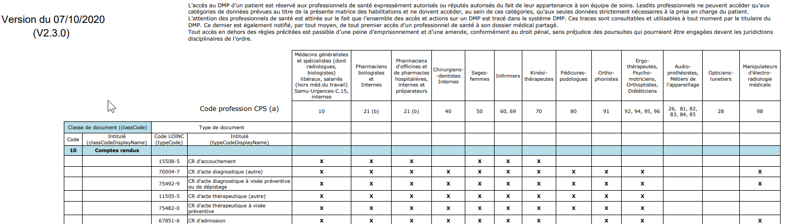

DMP > matrice habilitation
Les documents dans le DMP contient un certains nombres de métadata comme :
- classCode
- confidentialityCode
- typeCode
- formatCode
- practiceSettingCode
La visibilité d’un document pour un acteur de santé dépend du typeCode, le typeCode est une spécialisation du classCode
Pour connaître les types de documents qui peuvent être accédés par un professionnel de santé, il faut suivre la matrice
des habilitations : https://www.dmp.fr/matrice-habilitation

Dans le guide d’intégration
Les conditions d’accès en lecture aux documents contenus dans le DMP d’un patient (sur lequel ils ont l’autorisation d’accès) dépendent des professions et spécialités des PS recueillies à partir de la carte CPS du PS. Ces règles sont définies dans la matrice d’habilitation [DMP-MHAB].
Dans la DevBoxSanté-DMP
-
Connaître la liste des typeCode :
- API Java :
@Autowired
private DMPCClient client;
...
// Récupération des différents classCode
client.getCodesFor(DMPCCode.ASIPJeuxValeurs.CLASS_CODE)
// Récupération des différents typeCode
client.getCodesFor(DMPCCode.ASIPJeuxValeurs.TYPE_CODE)
- API REST
curl --location --request GET 'https://dmpc-api-rest-3-1.herokuapp.com/proxy/nomenclatures/?jeuxValeurs=TYPE_CODE' \
--header 'Content-Type: application/json' \
Lors de l’homologation
Exemple de test à valider lors de l’homologation :
L’utilisateur s’authentifie avec une carte CPS autorisée à accéder au DMP du patient. Un document invisible (confidentialityCode « INVISIBLE_PATIENT») est déjà présent sur le DMP. Le PS est habilité à accéder à ce type de document (cf. matrice d’habilitations). Le PS demande à mettre à jour le document afin de le rendre visible du patient (confidentialityCode : vide). En retour le SI DMP confirme la mise à jour du document.
=> Mode opératoire : Rendre visible le document 70 (typeCode 11502-2 (CR d’examens biologiques))